Startpakket · 12 september 2026
Het profiel staat inmiddels: naam, gebruikersnaam, foto, bio, categorie, link en contactgegevens zijn ingevuld. Wat nog ontbreekt is de inhoud — twaalf berichten met bijschrift, omslagen voor je highlights en een videodraaiboek, hieronder klaar om te plaatsen.
@ygdigital.nl
Al geregeld
Dit is op 12 september ingesteld en is nu openbaar zichtbaar.
Nog te doen
Drie dingen die om je telefoon vragen — plaatsen, verhalen en WhatsApp kunnen niet vanaf de computer.
Ter naslag
Wat er nu op je profiel staat. De weergavenaam is kort gehouden — YG Digital, precies als je site — en daarom begint de bio met het woord waar mensen op zoeken. Mocht je hem ooit opnieuw moeten invoeren, dan staat hij hier klaar.
Websites voor ondernemers, gebouwd als de entree van uw bedrijf. Vanaf € 550 · vaste prijs vooraf · heel Nederland Uw eerste ontwerp is gratis ↓
Instagram staat 150 tekens toe, regeleindes meegeteld. Deze zit daar net onder, dus haal er niets bij zonder iets weg te halen.
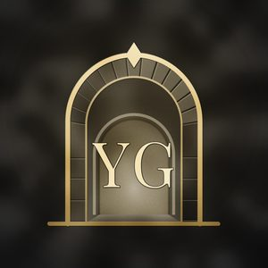
profielfoto.cjs.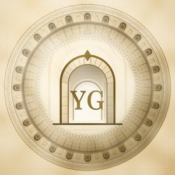
medaillon.cjs.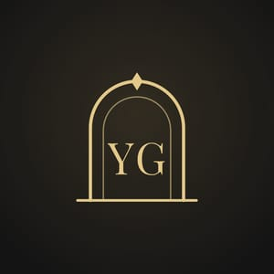
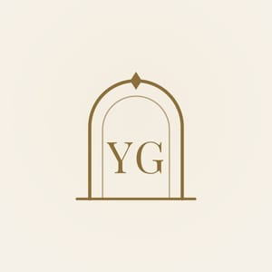
De feed
Plaats ze in deze volgorde, twee per week. Donker en ivoor wisselen elkaar af, zodat je profielraster vanzelf een dambord wordt — dat blijft kloppen of je nu bij drie of bij twaalf bent. Elk bericht staat in twee formaten klaar: 4:5 (staand, voor de tijdlijn) en 1:1 (vierkant). Gebruik 4:5, tenzij je het bericht ook ergens anders wilt plaatsen.
Onder elk bericht
Plak de set die bij het soort bericht hoort onder je tekst, of in de eerste reactie als je de tekst schoon wilt houden. Bij elk bericht hierboven staat welke set erbij hoort.
Bovenaan je profiel
Vier vaste rubrieken. Instagram zet de titel er zelf onder, dus in het beeld staat alleen het teken. Let op: een highlight ontstaat pas als er minstens één verhaal in zit — plaats dus eerst iets als verhaal, maak daarna de highlight, en kies dan Omslag bewerken om deze afbeelding te uploaden.
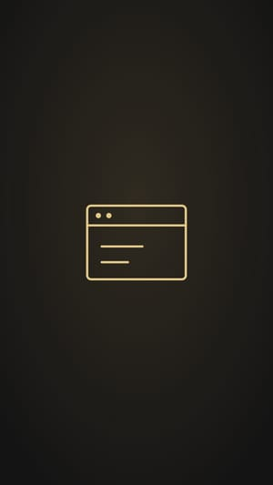
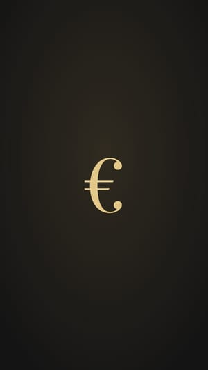
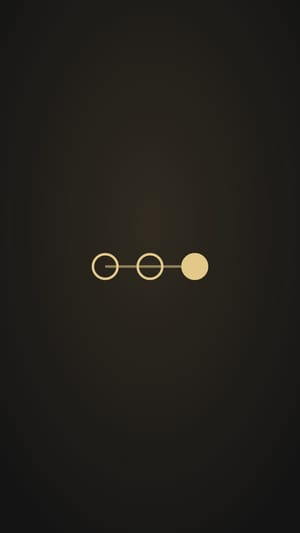
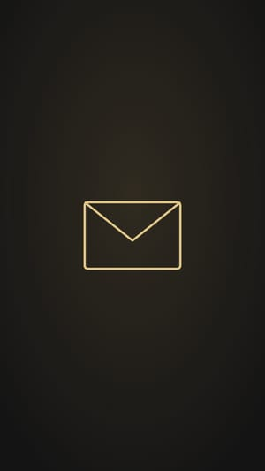
Achtergronden in je huisstijl. Zet er in de app je tekst of foto overheen, dan vallen je verhalen niet uit de toon.
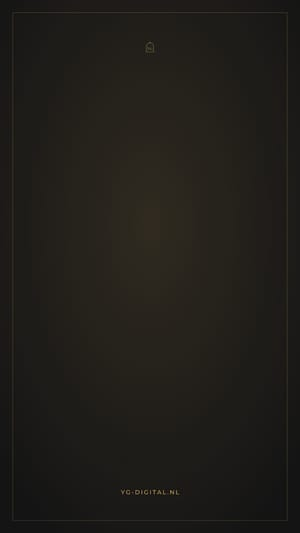
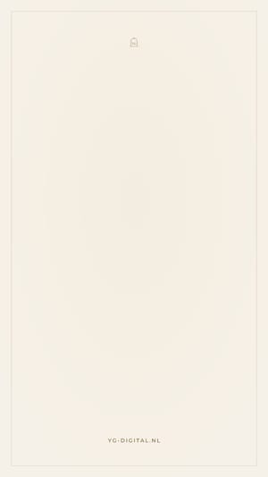
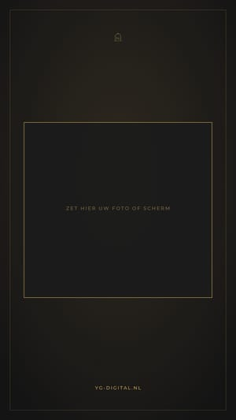
Als je één ding opneemt
Je ontwerpstudio is het enige op je site dat niemand anders heeft, en hij beweegt. Dat is precies wat een Reel nodig heeft. Neem je scherm op terwijl je de studio doorloopt — op je telefoon, staand, ongeveer 20 seconden.
| Tijd | Wat je opneemt | Tekst in beeld |
|---|---|---|
| 0–4 s | De triomfboog die zichzelf tekent, tot de deuren opengaan. | Zie uw website voordat hij bestaat. |
| 4–8 s | Je kiest een branche — laat de vinger het aantikken. | Kies uw branche. |
| 8–13 s | Je wisselt twee of drie keer van sfeer, zodat dezelfde site omslaat. | Kies uw sfeer. |
| 13–18 s | De site verschijnt met een naam erop; scroll er rustig doorheen. | Met uw eigen naam erop. |
| 18–20 s | Stilstaand slotbeeld op de poort. | Gratis, zonder account. yg-digital.nl |
Waar alles staat
Alles op ware grootte staat op je eigen computer. De platen hier zijn kleine voorbeelden — upload naar Instagram altijd de PNG’s uit de map hieronder.
| Map | Wat erin zit |
|---|---|
| instagram/uit/ | 36 berichtplaten (4:5 en 1:1), profielfoto’s, 4 omslagen, 3 verhaalsjablonen |
| instagram/bron/ | De schermafdrukken van yg-digital.nl en ordepartner.nl |
| instagram/berichten.cjs | De teksten op de platen. Pas ze aan en draai node instagram/maak.cjs |
| instagram/maak.cjs | De rendermachine: SVG naar PNG, zelfde aanpak als je logo-generator |
| instagram/extra.cjs | Profielfoto, omslagen en verhaalsjablonen |
| instagram/strook.cjs | Legt een strook van een webpagina vast rond een stuk tekst |